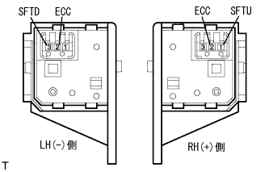

Shift Lever Assembly (U660E) Inspection |
| 1. Continuity Inspection |
 |
Using SST (Toyota electrical tester), check the resistance between the terminals of the connector.
| Tester Connection | Condition | Standard |
|---|---|---|
| 1(SFTU) - 2(ECC) | When RH (+) side lever is pulled | Below 1 Ω |
| 1(SFTU) - 2(ECC) | When RH (+) side lever is released | 10k Ω or higher |
| Tester Connection | Condition | Standard |
|---|---|---|
| 2(ECC) - 3(SFTD) | When LH (-) lever is pulled | Below 1 Ω |
| 2(ECC) - 3(SFTD) | When LH (-) lever is released | 10k Ω or higher |